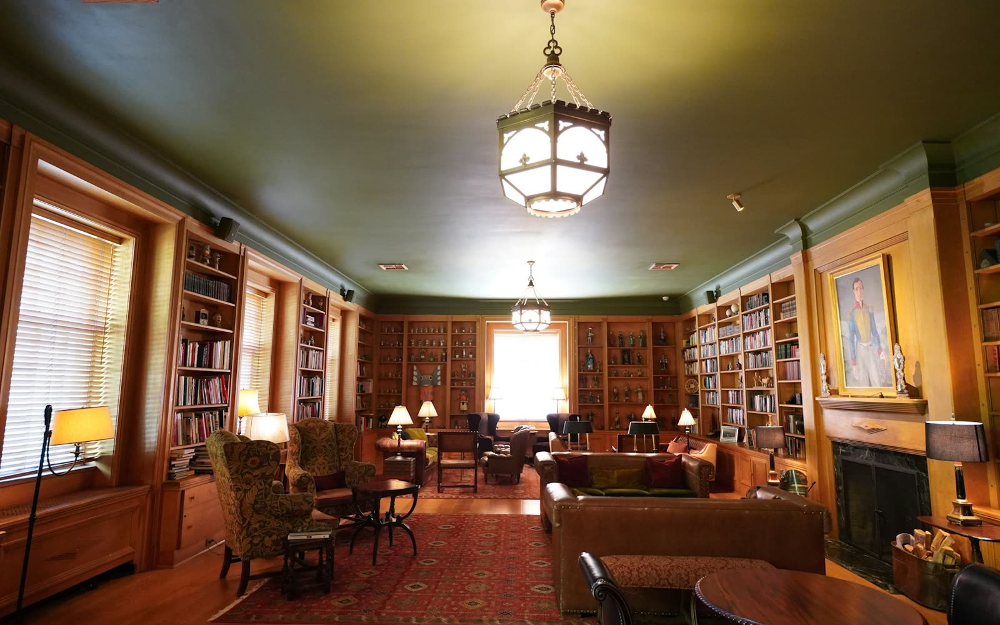
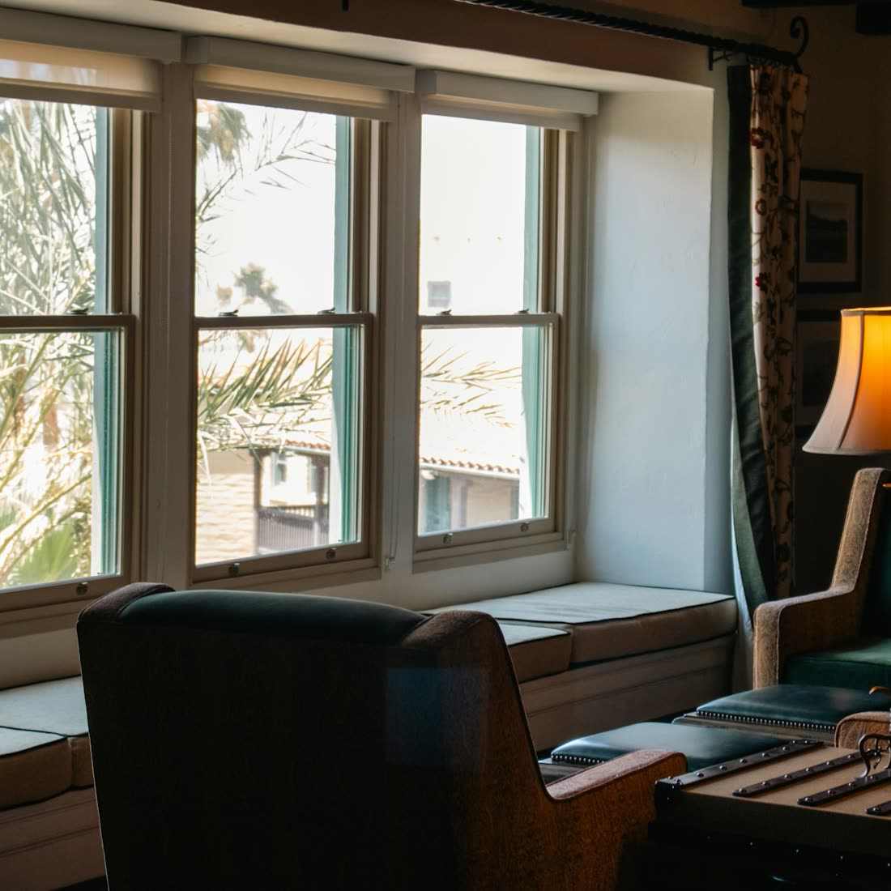
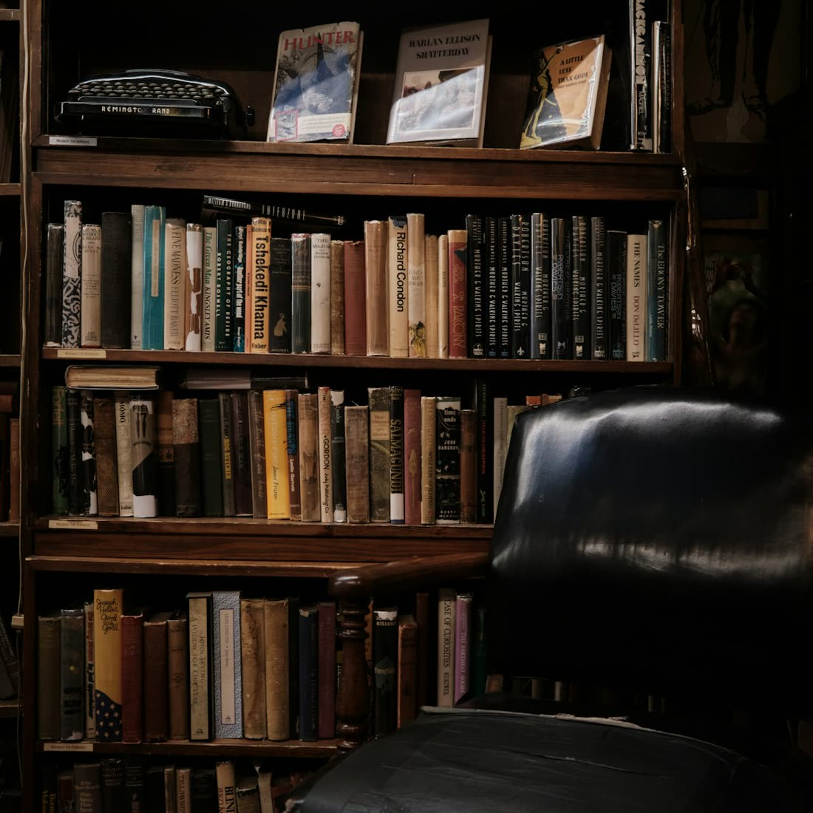
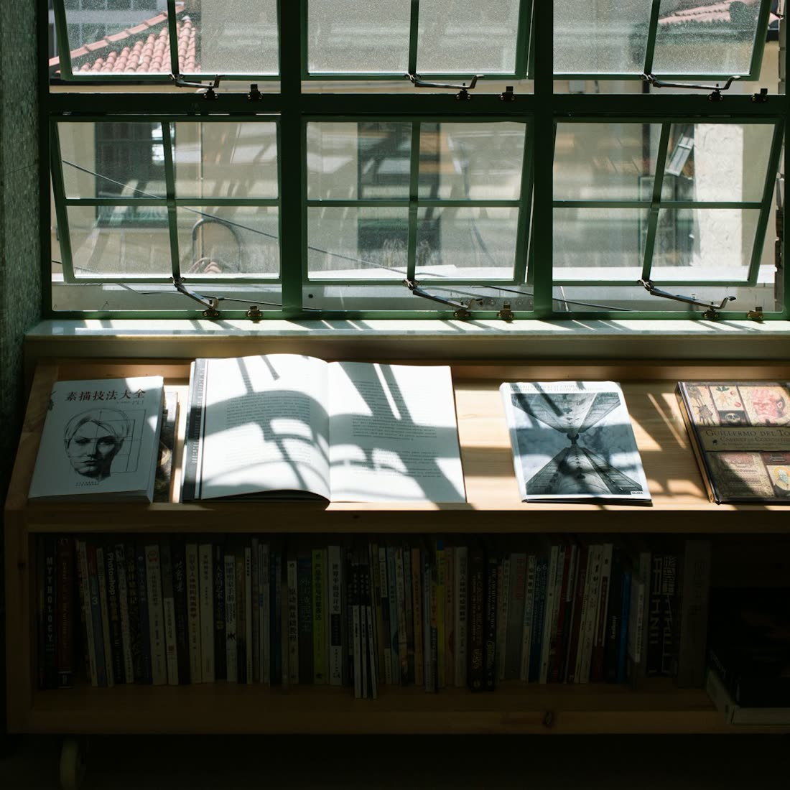

1층
긴 책상 열람실
초록 갓등 아래 긴 책상을 따라 앉습니다. 자리마다 콘센트를 달았고, 밤 10시까지 불을 켜 둡니다.
REOPEN · 새 단장을 마쳤습니다
○○시립도서관이 일 년의 공사를 마치고 다시 문을 엽니다. 층마다 달라진 자리를 먼저 둘러보세요.
다시 여는 날
3월 2일 월요일 오전 9시

숫자는 예시입니다
FLOOR GUIDE



1층
초록 갓등 아래 긴 책상을 따라 앉습니다. 자리마다 콘센트를 달았고, 밤 10시까지 불을 켜 둡니다.
2층
창을 따라 푹신한 의자를 놓았습니다. 무릎에 책을 올려 두고 오래 읽기 좋은 자리입니다.
3층
절판된 책과 기증받은 책을 모았습니다. 가죽 의자 옆 서가에서 한 권씩 꺼내 보세요.
4층
볕이 드는 창 아래에 이달의 잡지와 큰 화집을 펼쳐 둡니다. 서서 넘겨 봐도 좋습니다.
MARCH
날짜와 프로그램은 예시입니다
프로그램 신청하기VISIT
○○시 ○○구 ○○로 00 · 02-000-0000
○○역 3번 출구에서 걸어서 7분
신분증만 들고 1층 안내 데스크로 오세요. 한 번에 열 권까지 빌려 드립니다.